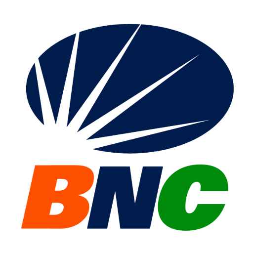

Documentación API BNC
Copia local y navegable de las dos documentaciones públicas de Postman. Todo el contenido está incluido: descripciones, endpoints, cuerpos de petición, respuestas de ejemplo, imágenes y datos originales en JSON.
Snapshot generado el 28 de octubre de 2026.
5) ESolutions API Documentation v4.1 (public)
Integración REST: autenticación, P2P, C2P, VPOS, consultas, validaciones, gestor de asociados y operaciones SIMF de crédito y débito inmediato.
Abrir documentación →
Documento técnicoBNC NotificationPush V2.0
Reglas de recepción y respuesta, disponibilidad, autenticación API Key/JWT, validaciones, endpoint de ping, certificación y ambientes de integración.
Abrir documentación →Contenido incluido
HTML offline
Las dos páginas funcionan sin conexión y conservan navegación, búsqueda y ejemplos.
Datos originales
Colecciones y metadatos de Postman guardados en data/ en formato JSON.
Recursos locales
Logos e imágenes descargados en assets/images/. No se cargan librerías externas.